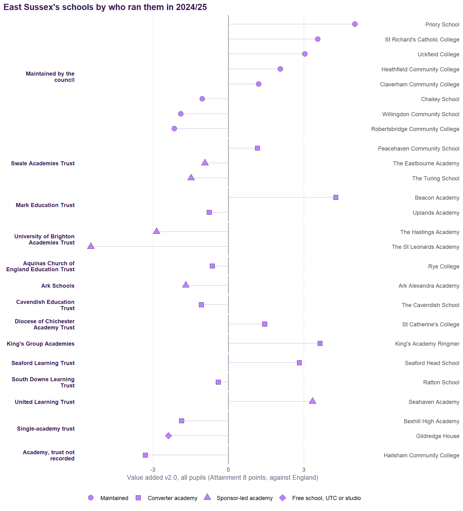
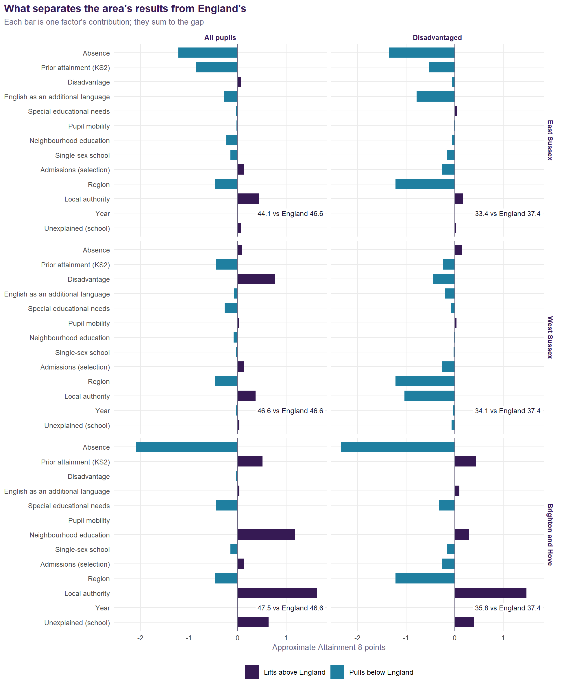
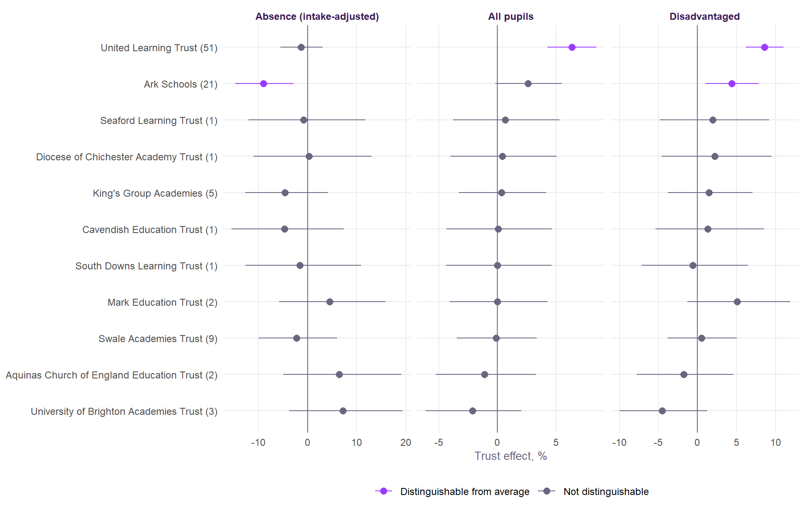
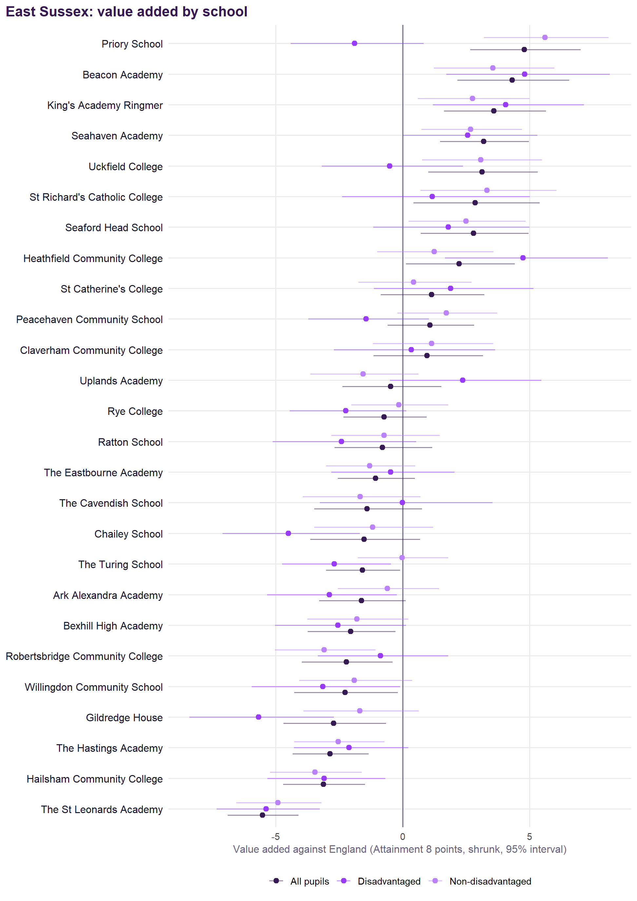
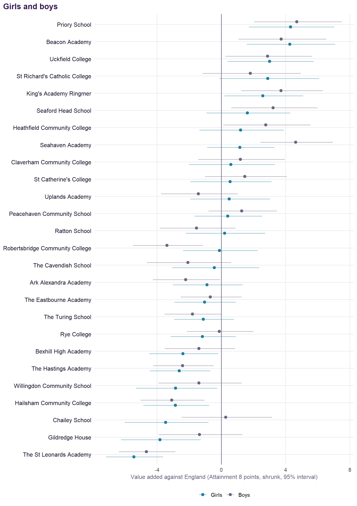
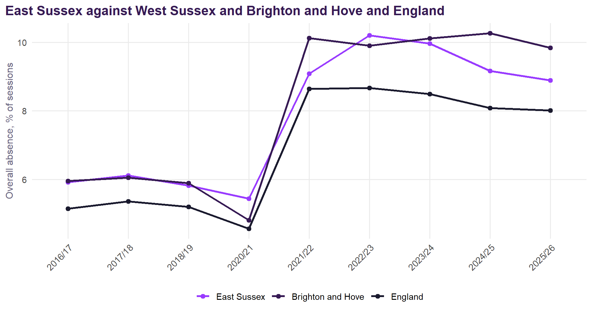
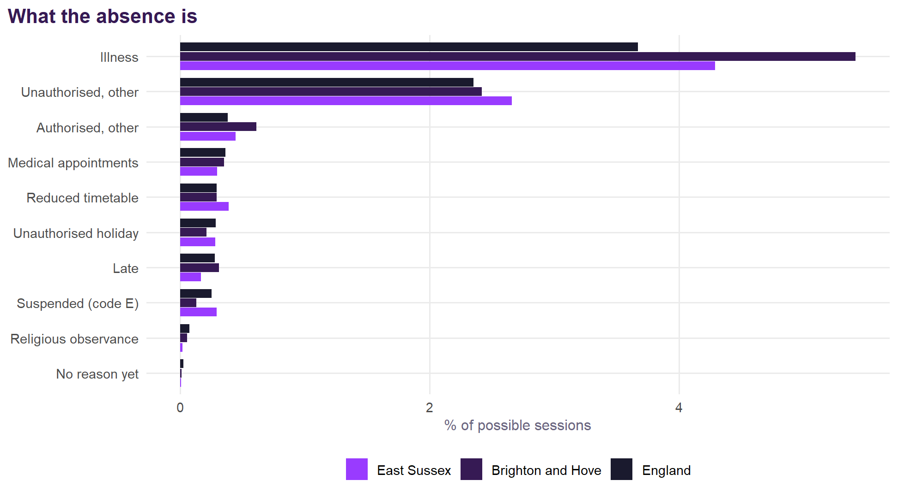
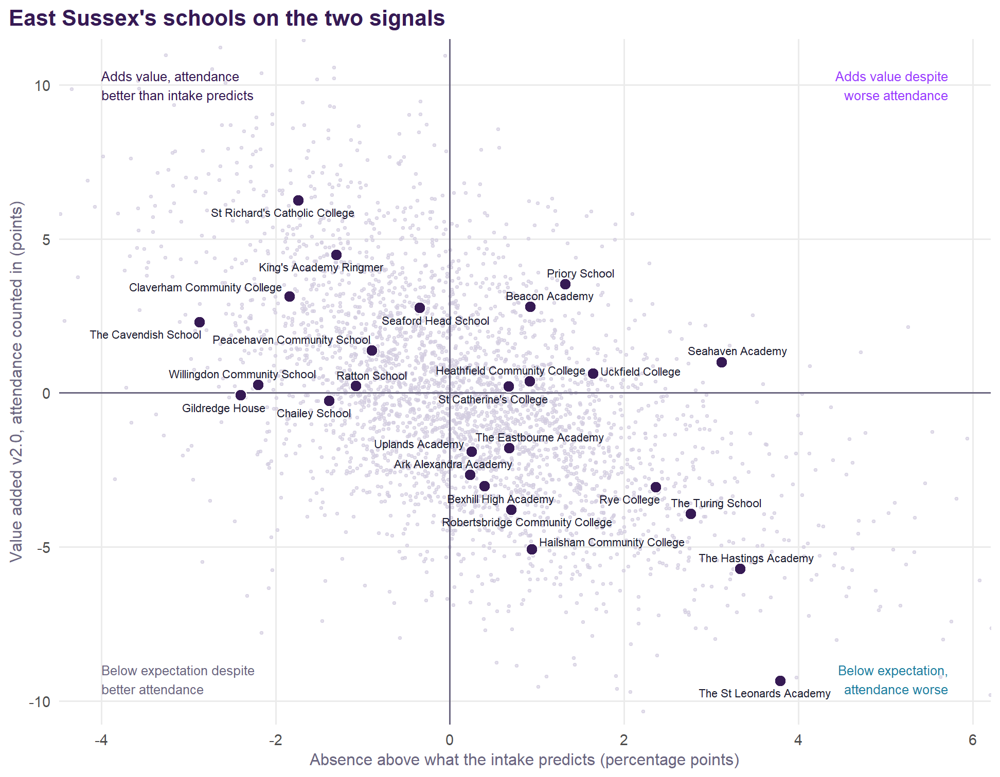

Each school coloured by Value Added v2.0 for all pupils; choose another measure, including absence against intake, from the menu. Circle size is the school’s roll; hover for every group’s value added, absence against intake, the published v1 figure, and Ofsted.
East Sussex
Value Added v2.0 for East Sussex’s secondary schools.
NoteAbout this page
Value Added v2.0 for East Sussex’s state-funded secondary schools, 2021/22 to 2024/25, measured against England (see the method), with the analyses of the original Sussex document refitted on the v2.0 model. Built from published DfE and Ofsted data; nothing uses pupil-level records.
Summary
- 26 schools, with value added for all pupils averaging +0.1 points against England: 7 significantly above expectation and 3 below.
- Disadvantaged pupils -0.6, non-disadvantaged +0.2; girls -0.1, boys +0.3.
- Strongest: Priory School (+5.0). Weakest: The St Leonards Academy (-5.5).
- Absence runs 0.3 points above what the intake predicts on average over 2021/22 to 2024/25 (55th highest of 152 authorities); The St Leonards Academy, The Hastings Academy, Seahaven Academy, The Turing School, Rye College, Uckfield College and Priory School more than a point above.
- The authority’s own effect is +1.0% (51st of 152) for all pupils, and +0.5% (66th) for disadvantaged pupils.
- District effects on the v2.0 model (Hastings for all pupils (-4.4%), Lewes for all pupils (+4.9%), Hastings for disadvantaged pupils (-5.4%) and Hastings for absence (+8.5%)) disappear once each school’s own record is counted: they belong to schools, not places.
- Suspensions: 28.0 episodes per 100 pupils (England 21.2); 8.8 pupils per 100 suspended at least once (England 7.3). Reduced timetables run at 1.3 times the national rate.
- Trusts that stand out nationally on v2.0: Ark Schools (disadvantaged pupils +4.4% and absence -9.0%) and United Learning Trust (all pupils +6.3% and disadvantaged pupils +8.6%).
- Latest Ofsted: 6 report cards, 5 inspections with no overall grade, 9 graded inspections and 6 ungraded visits only.
The schools
| School | District | All pupils | Disadv. | Non-disadv. | Girls | Boys | Absence vs intake | v1 | Ofsted latest | Run by (2024/25) |
|---|---|---|---|---|---|---|---|---|---|---|
| Priory School | Lewes | +5.0 (+2.4 to +7.8) | -1.7 | +6.0 | +4.7 | +5.0 | +1.3 | +5.0 | Remains Good (Nov 2023, ungraded visit) | Maintained by the council |
| Beacon Academy | Wealden | +4.3 (+1.6 to +7.1) | +4.7 | +3.4 | +4.4 | +3.8 | +0.9 | +3.0 | Outstanding (Apr 2024) | Mark Education Trust |
| King's Academy Ringmer | Lewes | +3.6 (+1.2 to +6.2) | +4.2 | +3.0 | +2.7 | +3.8 | -1.3 | +5.3 | Standards maintained (Nov 2024, ungraded visit) | King's Group Academies |
| St Richard's Catholic College | Rother | +3.5 (+0.5 to +6.7) | +1.5 | +3.7 | +3.7 | +2.5 | -1.7 | +3.9 | Good (Oct 2021) | Maintained by the council |
| Seahaven Academy | Lewes | +3.3 (+1.2 to +5.6) | +2.7 | +2.9 | +1.4 | +4.9 | +3.1 | +3.1 | Report card (Nov 2025): achievement Expected standard, curriculum and teaching Expected standard | United Learning Trust |
| Uckfield College | Wealden | +3.0 (+0.4 to +5.8) | -0.6 | +2.9 | +3.0 | +2.9 | +1.6 | +1.4 | Outstanding (Apr 2024) | Maintained by the council |
| Seaford Head School | Lewes | +2.8 (+0.2 to +5.5) | +1.7 | +2.3 | +1.7 | +3.4 | -0.3 | +0.6 | Remains Outstanding (Nov 2023, ungraded visit) | Seaford Learning Trust |
| Heathfield Community College | Wealden | +2.1 (-0.5 to +4.8) | +4.7 | +1.1 | +1.0 | +2.7 | +0.9 | +2.2 | Good (May 2023) | Maintained by the council |
| St Catherine's College | Eastbourne | +1.4 (-1.0 to +4.0) | +2.1 | +0.7 | +0.9 | +1.8 | +0.7 | +1.3 | Good (Nov 2019); Standards maintained (May 2025) | Diocese of Chichester Academy Trust |
| Claverham Community College | Rother | +1.2 (-1.4 to +3.9) | +0.6 | +1.5 | +0.9 | +1.4 | -1.8 | +1.0 | Remains Good (Improving) (Apr 2024, ungraded visit) | Maintained by the council |
| Peacehaven Community School | Lewes | +1.2 (-0.9 to +3.3) | -1.3 | +1.9 | +0.4 | +1.4 | -0.9 | +0.6 | Good (Oct 2023) | Swale Academies Trust |
| Ratton School | Eastbourne | -0.4 (-2.7 to +2.0) | -2.2 | -0.4 | +0.6 | -1.2 | -1.1 | -0.7 | Report card (May 2026): achievement Expected standard, curriculum and teaching Expected standard | South Downs Learning Trust |
| Rye College | Rother | -0.6 (-2.6 to +1.4) | -2.1 | +0.1 | -1.1 | -0.1 | +2.4 | -1.6 | Good (Jan 2023) | Aquinas Church of England Education Trust |
| Uplands Academy | Wealden | -0.8 (-3.1 to +1.7) | +2.2 | -1.7 | +0.2 | -1.7 | +0.3 | -0.9 | Standards maintained (Jan 2025, ungraded visit) | Mark Education Trust |
| The Eastbourne Academy | Eastbourne | -0.9 (-2.8 to +1.0) | -0.3 | -1.1 | -1.0 | -0.6 | +0.7 | -0.0 | No overall grade (Jan 2025): quality of education Inadequate | Swale Academies Trust |
| Chailey School | Lewes | -1.0 (-3.6 to +1.7) | -4.2 | -0.8 | -3.1 | +0.8 | -1.4 | -1.1 | Report card (Feb 2026): achievement Expected standard, curriculum and teaching Expected standard | Maintained by the council |
| The Cavendish School | Eastbourne | -1.1 (-3.6 to +1.6) | +0.2 | -1.4 | -0.1 | -1.8 | -2.9 | +0.3 | No overall grade (Jan 2025): quality of education Outstanding | Cavendish Education Trust |
| The Turing School | Eastbourne | -1.5 (-3.2 to +0.4) | -2.5 | +0.2 | -1.1 | -1.7 | +2.8 | -0.9 | Report card (Feb 2026): achievement Needs attention, curriculum and teaching Needs attention | Swale Academies Trust |
| Ark Alexandra Academy | Hastings | -1.7 (-3.8 to +0.5) | -3.0 | -0.7 | -1.0 | -2.3 | +0.2 | -1.9 | Report card (Jun 2026): achievement Strong standard, curriculum and teaching Strong standard | Ark Schools |
| Bexhill High Academy | Rother | -1.9 (-3.9 to +0.3) | -2.4 | -1.5 | -2.3 | -1.3 | +0.4 | -1.6 | No overall grade (May 2025): quality of education Good | Single-academy trust |
| Willingdon Community School | Wealden | -1.9 (-4.4 to +0.7) | -2.9 | -1.6 | -2.6 | -1.0 | -2.2 | -2.3 | Remains Good (Jun 2023, ungraded visit) | Maintained by the council |
| Robertsbridge Community College | Rother | -2.1 (-4.3 to +0.1) | -0.7 | -2.8 | -0.1 | -3.4 | +0.7 | -1.3 | Inadequate (Apr 2024) | Maintained by the council |
| Gildredge House | Eastbourne | -2.4 (-4.8 to +0.2) | -5.5 | -1.5 | -3.6 | -1.1 | -2.4 | -2.1 | No overall grade (Oct 2024): quality of education Good | Single-academy trust |
| The Hastings Academy | Hastings | -2.9 (-4.7 to -1.0) | -2.0 | -2.3 | -2.7 | -2.5 | +3.3 | -3.5 | Report card (Jan 2026): achievement Needs attention, curriculum and teaching Expected standard | University of Brighton Academies Trust |
| Hailsham Community College | Wealden | -3.3 (-5.3 to -1.2) | -3.2 | -3.6 | -3.2 | -3.3 | +0.9 | -2.5 | Inadequate (Mar 2023) | Academy, trust not recorded |
| The St Leonards Academy | Hastings | -5.5 (-7.2 to -3.7) | -5.2 | -4.7 | -5.6 | -4.7 | +3.8 | -5.3 | No overall grade (Jan 2025): quality of education Inadequate | University of Brighton Academies Trust |
Who runs them

How East Sussex compares
| Measure | East Sussex | West Sussex | Brighton and Hove | England |
|---|---|---|---|---|
| Attainment 8, all pupils | 43.8 (120th) | 46.4 | 45.5 | 46.8 |
| Attainment 8, disadvantaged | 33.0 (135th) | 33.5 | 33.9 | 37.7 |
| Attainment 8, non-disadvantaged | 47.5 (118th) | 48.9 | 49.6 | 49.9 |
| Disadvantage gap (points) | 14.5 (29th) | 15.4 | 15.7 | 12.2 |
| Disadvantaged (FSM6) % | 25.5 (89th) | 17.1 | 28.8 | 28.4 |
| Overall absence % | 9.7 (27th) | 8.7 | 11.3 | 8.6 |
| Persistent absence % | 26.4 (31st) | 23.9 | 30.6 | 23.9 |
| Mean KS2 (centred) | 3.79 (112th) | 4.26 | 4.71 | 4.47 |
| EAL % | 6.3 (130th) | 11.0 | 13.0 | 18.4 |
| Value added v2.0, all pupils | +0.1 | -0.0 | +1.6 | 0.0 |
| Value added v2.0, disadvantaged | -0.6 | -1.6 | +0.5 | 0.0 |
| Absence against intake (pp) | +0.3 | -0.3 | +1.6 | 0.0 |
What explains attainment in East Sussex

| Factor | All pupils | Disadvantaged |
|---|---|---|
| Absence | -1.22 | -1.35 |
| Prior attainment (KS2) | -0.86 | -0.54 |
| English as an additional language | -0.29 | -0.79 |
| Neighbourhood education | -0.23 | -0.06 |
| Single-sex school | -0.15 | -0.17 |
| Place (region and local authority) | -0.03 | -1.05 |
| Special educational needs | -0.03 | +0.05 |
| Pupil mobility | -0.02 | -0.02 |
| Unexplained (school) | +0.07 | +0.02 |
| Disadvantage | +0.07 | -0.06 |
| Other model terms | +0.13 | -0.27 |
For all pupils, East Sussex is 2.6 points below England. The pieces of at least a quarter of a point:
- absence (-1.22);
- prior attainment (KS2) (-0.86);
- region (-0.47);
- local authority (+0.43);
- English as an additional language (-0.29);
- and the schools themselves (+0.07).
For disadvantaged pupils, East Sussex is 4.2 points below England. The pieces of at least a quarter of a point:
- absence (-1.35);
- region (-1.22);
- English as an additional language (-0.79);
- prior attainment (KS2) (-0.54);
- admissions (selection) (-0.27);
- and the schools themselves (+0.02).
Trusts
The v2.0 model with a multi-academy trust level, allowing for each school’s own record and for how it came to be an academy, so trusts that take on struggling schools are not penalised for it. Nationally a trust moves results by about 2.4%, and absence by about 6.5%.

The disadvantaged gap, and girls and boys

The Turing School, Rye College, Priory School and Peacehaven Community School are above expectation for non-disadvantaged pupils and more than a point below it for disadvantaged ones. Beacon Academy, King’s Academy Ringmer, St Richard’s Catholic College, Seahaven Academy, Seaford Head School, Heathfield Community College, St Catherine’s College and Claverham Community College are above expectation for both groups. Girls’ and boys’ value added differ by more than two points at Seahaven Academy (girls +1.4, boys +4.9), Chailey School (girls -3.1, boys +0.8), Robertsbridge Community College (girls -0.1, boys -3.4) and Gildredge House (girls -3.6, boys -1.1).

Absence

- 8.9% absence in autumn and spring 2025/26 (9.2% a year earlier), against 8.0% for England.
- Against its intake, on the v2.0 intake terms, the area’s schools ran 0.31 points above what their pupils’ profiles predict over 2021/22 to 2024/25 (West Sussex -0.27 and Brighton and Hove +1.64).
- The St Leonards Academy, The Hastings Academy, Seahaven Academy, The Turing School, Rye College, Uckfield College and Priory School each run more than a point above their predictions.
- The Cavendish School, Gildredge House, Willingdon Community School, Claverham Community College, St Richard’s Catholic College, Chailey School, King’s Academy Ringmer and Ratton School run more than a point below.
| School | Absence % | Predicted by intake % | Above prediction | Illness | Unauthorised | Reduced timetable | Suspended |
|---|---|---|---|---|---|---|---|
| The St Leonards Academy | 14.2 | 10.4 | +3.8 | 3.1 | 2.7 | 0.20 | 0.09 |
| The Hastings Academy | 15.0 | 11.6 | +3.3 | 3.8 | 1.7 | 0.03 | 0.39 |
| Seahaven Academy | 13.9 | 10.7 | +3.1 | 4.6 | 5.0 | 0.68 | 0.69 |
| The Turing School | 14.3 | 11.6 | +2.8 | 3.5 | 6.1 | 0.09 | 0.95 |
| Rye College | 13.3 | 11.0 | +2.4 | 4.6 | 3.6 | 0.13 | 0.29 |
| Uckfield College | 10.2 | 8.6 | +1.6 | 5.3 | 1.9 | 1.01 | 0.24 |
| Priory School | 10.9 | 9.5 | +1.3 | 6.8 | 3.2 | 0.17 | 0.30 |
| Hailsham Community College | 11.0 | 10.0 | +0.9 | 4.8 | 4.2 | 0.55 | 0.50 |
| Beacon Academy | 9.6 | 8.7 | +0.9 | 4.5 | 3.0 | 0.40 | 0.12 |
| Heathfield Community College | 9.6 | 8.7 | +0.9 | 4.4 | 3.4 | 0.32 | 0.11 |
| Robertsbridge Community College | 11.3 | 10.6 | +0.7 | 5.5 | 2.4 | 0.59 | 0.45 |
| The Eastbourne Academy | 12.2 | 11.5 | +0.7 | 3.6 | 4.4 | 1.22 | 1.28 |
| St Catherine's College | 9.3 | 8.6 | +0.7 | 4.2 | 1.8 | 0.61 | 0.34 |
| Bexhill High Academy | 10.6 | 10.2 | +0.4 | 3.1 | 3.6 | 0.59 | 0.15 |
| Uplands Academy | 9.9 | 9.7 | +0.3 | 4.1 | 1.8 | 0.73 | 0.24 |
| Ark Alexandra Academy | 10.5 | 10.3 | +0.2 | 3.7 | 1.6 | 0.11 | 0.62 |
| Seaford Head School | 8.4 | 8.8 | -0.3 | 4.8 | 3.0 | 0.24 | 0.01 |
| Peacehaven Community School | 10.5 | 11.4 | -0.9 | 4.6 | 3.1 | 0.24 | 0.17 |
| Ratton School | 8.2 | 9.3 | -1.1 | 4.7 | 3.2 | 0.42 | 0.33 |
| King's Academy Ringmer | 9.7 | 11.0 | -1.3 | 5.8 | 1.7 | 0.25 | 0.55 |
| Chailey School | 7.4 | 8.8 | -1.4 | 3.8 | 2.0 | 0.39 | 0.10 |
| St Richard's Catholic College | 5.9 | 7.7 | -1.7 | 2.9 | 1.4 | 0.00 | 0.06 |
| Claverham Community College | 7.3 | 9.2 | -1.8 | 3.8 | 1.6 | 0.30 | 0.18 |
| Willingdon Community School | 6.8 | 9.0 | -2.2 | 4.0 | 1.9 | 0.34 | 0.14 |
| Gildredge House | 6.6 | 9.0 | -2.4 | 4.7 | 1.0 | 0.33 | 0.04 |
| The Cavendish School | 6.1 | 9.0 | -2.9 | 3.0 | 1.1 | 0.19 | 0.02 |

Suspensions were 28.0 episodes per 100 pupils in 2024/25, against 21.2 for England. One pupil can be suspended several times: 8.8 pupils per 100 were suspended at least once, about 3.2 times each, against 7.3 per 100 and 2.9 times in England. Reduced timetables take 0.39% of sessions, 1.3 times England’s rate.
| School | Pupils | Suspension episodes per 100 | Pupils suspended per 100 | Permanent exclusions |
|---|---|---|---|---|
| The Hastings Academy | 808 | 89.9 | 20.4 | 8 |
| Ark Alexandra Academy | 1431 | 74.7 | 19.8 | 2 |
| The St Leonards Academy | 1322 | 73.7 | 19.4 | 0 |
| Uplands Academy | 736 | 53.4 | 14.7 | 1 |
| The Eastbourne Academy | 800 | 48.9 | 13.8 | 6 |
| Seahaven Academy | 745 | 47.9 | 13.6 | 4 |
| St Catherine's College | 1072 | 44.1 | 12.2 | 1 |
| The Turing School | 765 | 34.0 | 9.9 | 1 |
| King's Academy Ringmer | 642 | 32.7 | 9.8 | 4 |
| Rye College | 616 | 29.1 | 12.0 | 2 |
| Uckfield College | 1602 | 26.8 | 7.6 | 1 |
| Bexhill High Academy | 1454 | 26.0 | 8.8 | 3 |
| Ratton School | 1197 | 22.9 | 8.6 | 0 |
| Priory School | 1163 | 22.5 | 8.1 | 0 |
| Hailsham Community College | 1615 | 19.4 | 8.5 | 1 |
| Willingdon Community School | 1093 | 17.3 | 6.7 | 0 |
| Claverham Community College | 1148 | 16.7 | 7.1 | 1 |
| Heathfield Community College | 1437 | 14.9 | 6.2 | 2 |
| Beacon Academy | 1662 | 14.5 | 3.9 | 0 |
| Peacehaven Community School | 903 | 13.8 | 6.6 | 1 |
| Chailey School | 855 | 12.2 | 5.8 | 0 |
| St Richard's Catholic College | 1033 | 9.8 | 5.5 | 0 |
| The Cavendish School | 1372 | 7.8 | 2.8 | 0 |
| Gildredge House | 1168 | 6.8 | 4.7 | 0 |
| Seaford Head School | 1448 | 1.5 | 1.3 | 0 |
| Robertsbridge Community College | 733 | 0.0 | 0.0 | 0 |
| School | Absence % | Gain, all pupils | Gain, disadvantaged |
|---|---|---|---|
| The Turing School | 15.0 | +4.7 | +4.4 |
| Priory School | 12.1 | +3.8 | +3.0 |
| Seahaven Academy | 12.6 | +3.7 | +4.4 |
| Rye College | 12.9 | +3.6 | +3.7 |
| Robertsbridge Community College | 12.3 | +3.5 | +3.7 |
| Peacehaven Community School | 11.2 | +2.5 | +2.7 |
| Heathfield Community College | 10.5 | +2.4 | +3.2 |
| Uckfield College | 10.6 | +2.3 | +1.7 |
| The Eastbourne Academy | 10.8 | +2.1 | +2.6 |
| The St Leonards Academy | 11.1 | +2.0 | +2.3 |
| King's Academy Ringmer | 10.0 | +1.7 | +1.6 |
| The Hastings Academy | 10.2 | +1.6 | +1.7 |
| Hailsham Community College | 10.0 | +1.3 | +1.5 |
| Beacon Academy | 9.1 | +0.7 | +0.8 |
| Ratton School | 9.1 | +0.6 | +0.6 |
| Uplands Academy | 9.0 | +0.5 | +0.6 |
| Ark Alexandra Academy | 8.9 | +0.4 | +0.5 |
| Bexhill High Academy | 8.9 | +0.3 | +0.4 |
| St Catherine's College | 8.7 | +0.1 | +0.2 |
| Seaford Head School | 8.6 | +0.1 | +0.1 |
School by school

Across England the two signals move together: schools whose absence runs below what their intake predicts tend to add more. Across East Sussex’s schools the correlation between the two is -0.61 (-0.54 across England).
Contextual league tables
| School | 2021/22 | 2022/23 | 2023/24 | 2024/25 | v2.0 (shrunk) | 95% interval |
|---|---|---|---|---|---|---|
| Priory School | +6.3 | +5.2 | +8.1 | +2.8 | +5.0 | +2.4 to +7.8 |
| Beacon Academy | +5.1 | +5.3 | +5.3 | +2.9 | +4.3 | +1.6 to +7.1 |
| King's Academy Ringmer | +4.4 | +2.9 | +3.5 | +5.0 | +3.6 | +1.2 to +6.2 |
| St Richard's Catholic College | +6.2 | +4.2 | +0.7 | +4.2 | +3.5 | +0.5 to +6.7 |
| Seahaven Academy | +6.1 | +3.6 | +2.3 | +2.8 | +3.3 | +1.2 to +5.6 |
| Uckfield College | +6.9 | +1.5 | +3.2 | +1.8 | +3.0 | +0.4 to +5.8 |
| Seaford Head School | +1.4 | +2.4 | +4.5 | +3.5 | +2.8 | +0.2 to +5.5 |
| Heathfield Community College | -5.8 | +5.7 | +3.4 | +5.0 | +2.1 | -0.5 to +4.8 |
| St Catherine's College | +5.0 | -1.8 | +1.6 | +1.2 | +1.4 | -1.0 to +4.0 |
| Claverham Community College | -1.0 | +3.5 | +0.1 | +2.1 | +1.2 | -1.4 to +3.9 |
| Peacehaven Community School | -0.7 | -0.5 | +2.3 | +3.2 | +1.2 | -0.9 to +3.3 |
| Ratton School | -0.7 | -0.0 | -2.1 | +0.3 | -0.4 | -2.7 to +2.0 |
| Rye College | +1.7 | -1.4 | -1.4 | -2.2 | -0.6 | -2.6 to +1.4 |
| Uplands Academy | +0.3 | -0.7 | -0.8 | -2.8 | -0.8 | -3.1 to +1.7 |
| The Eastbourne Academy | -1.4 | -0.9 | -4.3 | +2.2 | -0.9 | -2.8 to +1.0 |
| Chailey School | -2.6 | -2.9 | +3.1 | -3.1 | -1.0 | -3.6 to +1.7 |
| The Cavendish School | -1.0 | -2.1 | +0.2 | -2.6 | -1.1 | -3.6 to +1.6 |
| The Turing School | -4.3 | -1.1 | -3.6 | +1.5 | -1.5 | -3.2 to +0.4 |
| Ark Alexandra Academy | -1.7 | -4.2 | -1.3 | -1.2 | -1.7 | -3.8 to +0.5 |
| Bexhill High Academy | -2.1 | -2.5 | -1.8 | -2.8 | -1.9 | -3.9 to +0.3 |
| Willingdon Community School | -1.1 | -4.1 | -1.2 | -2.8 | -1.9 | -4.4 to +0.7 |
| Robertsbridge Community College | -1.6 | -6.7 | -0.3 | -1.5 | -2.1 | -4.3 to +0.1 |
| Gildredge House | -4.5 | -3.6 | -1.1 | -2.3 | -2.4 | -4.8 to +0.2 |
| The Hastings Academy | -1.5 | -4.2 | -4.4 | -3.1 | -2.9 | -4.7 to -1.0 |
| Hailsham Community College | -1.5 | -1.7 | -5.7 | -6.1 | -3.3 | -5.3 to -1.2 |
| The St Leonards Academy | -7.0 | -4.3 | -7.2 | -6.5 | -5.5 | -7.2 to -3.7 |
| School | 2021/22 | 2022/23 | 2023/24 | 2024/25 | v2.0 (shrunk) | 95% interval |
|---|---|---|---|---|---|---|
| Beacon Academy | +7.5 | +1.4 | +11.0 | +5.0 | +4.7 | +1.6 to +8.1 |
| Heathfield Community College | -7.8 | +10.4 | +8.6 | +14.0 | +4.7 | +1.6 to +8.0 |
| King's Academy Ringmer | +3.5 | +9.4 | +9.4 | +0.2 | +4.2 | +1.4 to +7.3 |
| Seahaven Academy | +2.3 | +4.8 | +3.5 | +2.8 | +2.7 | +0.2 to +5.5 |
| Uplands Academy | +1.0 | +9.6 | -0.9 | +2.0 | +2.2 | -0.6 to +5.4 |
| St Catherine's College | +7.8 | -1.1 | +2.2 | +2.0 | +2.1 | -0.9 to +5.4 |
| Seaford Head School | +1.4 | -2.5 | +5.7 | +3.6 | +1.7 | -1.3 to +4.9 |
| St Richard's Catholic College | +1.3 | +2.9 | +2.7 | -0.4 | +1.5 | -2.1 to +5.3 |
| Claverham Community College | -1.5 | +4.6 | -3.8 | +3.2 | +0.6 | -2.5 to +3.9 |
| The Cavendish School | -0.2 | -0.7 | +0.1 | +0.9 | +0.2 | -3.0 to +3.8 |
| The Eastbourne Academy | -1.6 | -0.0 | -3.2 | +2.6 | -0.3 | -2.7 to +2.2 |
| Uckfield College | +4.6 | -0.3 | +3.2 | -8.9 | -0.6 | -3.3 to +2.3 |
| Robertsbridge Community College | -1.6 | -2.9 | +1.4 | -1.3 | -0.7 | -3.2 to +2.0 |
| Peacehaven Community School | -1.4 | -4.9 | -1.7 | +0.5 | -1.3 | -3.6 to +1.2 |
| Priory School | -1.3 | -1.1 | -0.2 | -6.3 | -1.7 | -4.2 to +1.0 |
| The Hastings Academy | -0.4 | -2.4 | -3.9 | -4.2 | -2.0 | -4.1 to +0.4 |
| Rye College | -1.3 | -3.2 | -2.9 | -4.0 | -2.1 | -4.3 to +0.3 |
| Ratton School | +0.6 | -3.7 | -4.0 | -4.2 | -2.2 | -4.9 to +0.8 |
| Bexhill High Academy | -3.4 | -5.4 | -0.8 | -3.4 | -2.4 | -4.8 to +0.3 |
| The Turing School | -1.6 | -3.2 | -4.0 | -4.4 | -2.5 | -4.6 to -0.3 |
| Willingdon Community School | -7.2 | -2.5 | +3.0 | -8.6 | -2.9 | -5.7 to +0.1 |
| Ark Alexandra Academy | -2.8 | -5.5 | -5.6 | -1.7 | -3.0 | -5.4 to -0.3 |
| Hailsham Community College | -5.9 | -1.5 | -5.2 | -4.6 | -3.2 | -5.4 to -0.8 |
| Chailey School | -6.3 | -2.7 | -11.0 | -1.7 | -4.2 | -6.8 to -1.4 |
| The St Leonards Academy | -7.9 | -7.6 | -5.6 | -6.0 | -5.2 | -7.2 to -3.1 |
| Gildredge House | -10.9 | -10.2 | -3.4 | -4.5 | -5.5 | -8.2 to -2.5 |
| School | 2021/22 | 2022/23 | 2023/24 | 2024/25 | v2.0 (shrunk) | 95% interval |
|---|---|---|---|---|---|---|
| Priory School | +7.6 | +6.2 | +9.0 | +4.5 | +6.0 | +3.6 to +8.5 |
| St Richard's Catholic College | +6.9 | +4.5 | +0.4 | +4.9 | +3.7 | +1.1 to +6.4 |
| Beacon Academy | +4.4 | +5.4 | +3.6 | +1.8 | +3.4 | +1.1 to +5.9 |
| King's Academy Ringmer | +4.4 | +1.1 | +1.6 | +6.4 | +3.0 | +0.9 to +5.3 |
| Uckfield College | +6.7 | +1.6 | +2.5 | +2.5 | +2.9 | +0.6 to +5.4 |
| Seahaven Academy | +7.3 | +3.0 | +1.1 | +2.1 | +2.9 | +1.0 to +4.9 |
| Seaford Head School | +1.2 | +2.7 | +3.6 | +2.5 | +2.3 | +0.1 to +4.7 |
| Peacehaven Community School | -0.7 | +1.3 | +3.7 | +4.0 | +1.9 | +0.0 to +3.9 |
| Claverham Community College | -0.3 | +3.4 | +1.2 | +1.9 | +1.5 | -0.8 to +3.9 |
| Heathfield Community College | -5.3 | +4.8 | +2.1 | +2.8 | +1.1 | -1.1 to +3.4 |
| St Catherine's College | +3.9 | -2.3 | +1.0 | +0.5 | +0.7 | -1.4 to +3.0 |
| The Turing School | -5.9 | +1.3 | -2.2 | +7.3 | +0.2 | -1.6 to +2.0 |
| Rye College | +3.1 | -1.1 | -0.2 | -1.6 | +0.1 | -1.8 to +2.0 |
| Ratton School | -1.2 | +0.1 | -2.2 | +0.8 | -0.4 | -2.5 to +1.7 |
| Ark Alexandra Academy | -0.6 | -4.0 | +2.0 | -1.2 | -0.7 | -2.7 to +1.3 |
| Chailey School | -2.0 | -2.9 | +4.4 | -3.4 | -0.8 | -3.1 to +1.6 |
| The Eastbourne Academy | -1.5 | -0.2 | -5.1 | +1.9 | -1.1 | -2.8 to +0.7 |
| The Cavendish School | -1.2 | -2.3 | +0.2 | -3.6 | -1.4 | -3.6 to +1.0 |
| Gildredge House | -3.3 | -1.2 | -0.7 | -2.1 | -1.5 | -3.7 to +0.8 |
| Bexhill High Academy | -1.9 | -1.0 | -2.5 | -2.1 | -1.5 | -3.5 to +0.5 |
| Willingdon Community School | +0.9 | -4.3 | -2.0 | -1.9 | -1.6 | -3.8 to +0.7 |
| Uplands Academy | +0.6 | -3.1 | -1.5 | -4.1 | -1.7 | -3.8 to +0.4 |
| The Hastings Academy | -1.3 | -3.7 | -3.6 | -2.2 | -2.3 | -4.0 to -0.5 |
| Robertsbridge Community College | -2.0 | -7.5 | -1.4 | -2.0 | -2.8 | -4.7 to -0.8 |
| Hailsham Community College | -0.9 | -2.4 | -6.4 | -7.0 | -3.6 | -5.4 to -1.8 |
| The St Leonards Academy | -6.0 | -2.8 | -7.1 | -5.8 | -4.7 | -6.3 to -3.0 |
| School | 2021/22 | 2022/23 | 2023/24 | 2024/25 | v2.0 (shrunk) | 95% interval |
|---|---|---|---|---|---|---|
| Priory School | +6.3 | +3.4 | +7.7 | +4.2 | +4.7 | +1.8 to +7.8 |
| Beacon Academy | +4.3 | +4.9 | +7.2 | +3.3 | +4.4 | +1.3 to +7.6 |
| St Richard's Catholic College | +7.2 | +6.7 | +0.4 | +2.3 | +3.7 | +0.3 to +7.3 |
| Uckfield College | +8.6 | -0.5 | +4.6 | +1.3 | +3.0 | +0.0 to +6.2 |
| King's Academy Ringmer | +2.5 | +4.3 | +1.6 | +3.7 | +2.7 | +0.0 to +5.6 |
| Seaford Head School | +1.6 | +2.1 | +0.0 | +3.2 | +1.7 | -1.2 to +4.7 |
| Seahaven Academy | +4.4 | -0.5 | +1.5 | +0.8 | +1.4 | -1.0 to +3.8 |
| Heathfield Community College | -7.5 | +5.2 | +1.6 | +4.6 | +1.0 | -1.9 to +4.1 |
| Claverham Community College | -1.2 | +2.6 | +0.7 | +1.3 | +0.9 | -2.0 to +4.0 |
| St Catherine's College | +3.2 | -1.4 | -0.6 | +2.3 | +0.9 | -1.9 to +3.8 |
| Ratton School | -0.5 | +2.2 | -0.8 | +1.0 | +0.6 | -2.1 to +3.5 |
| Peacehaven Community School | -1.9 | +0.7 | +1.8 | +0.5 | +0.4 | -1.9 to +2.9 |
| Uplands Academy | +1.8 | -1.3 | +1.1 | -1.2 | +0.2 | -2.5 to +3.1 |
| Robertsbridge Community College | +2.4 | -5.2 | +0.2 | +1.9 | -0.1 | -2.6 to +2.7 |
| The Cavendish School | +0.1 | -1.9 | +0.0 | +0.4 | -0.1 | -3.1 to +3.1 |
| The Eastbourne Academy | -0.6 | +0.9 | -4.1 | -0.8 | -1.0 | -3.1 to +1.3 |
| Ark Alexandra Academy | -1.7 | -4.5 | +1.0 | -0.1 | -1.0 | -3.4 to +1.6 |
| The Turing School | -2.5 | -1.4 | -3.7 | +2.1 | -1.1 | -3.1 to +1.1 |
| Rye College | +0.9 | -0.2 | -3.0 | -3.2 | -1.1 | -3.4 to +1.3 |
| Bexhill High Academy | -2.9 | -2.4 | -2.1 | -4.1 | -2.3 | -4.6 to +0.2 |
| Willingdon Community School | -3.1 | -4.4 | -2.0 | -3.4 | -2.6 | -5.4 to +0.4 |
| The Hastings Academy | -0.1 | -4.5 | -4.4 | -3.8 | -2.7 | -4.8 to -0.5 |
| Chailey School | -5.4 | -5.6 | +1.1 | -5.6 | -3.1 | -6.0 to -0.1 |
| Hailsham Community College | -1.1 | -5.1 | -6.2 | -2.7 | -3.2 | -5.4 to -0.8 |
| Gildredge House | -6.3 | -4.8 | -5.3 | -1.3 | -3.6 | -6.3 to -0.7 |
| The St Leonards Academy | -7.9 | -2.2 | -8.6 | -7.7 | -5.6 | -7.5 to -3.5 |
| School | 2021/22 | 2022/23 | 2023/24 | 2024/25 | v2.0 (shrunk) | 95% interval |
|---|---|---|---|---|---|---|
| Priory School | +6.5 | +6.8 | +8.3 | +1.7 | +5.0 | +1.8 to +8.4 |
| Seahaven Academy | +7.6 | +7.6 | +2.9 | +4.6 | +4.9 | +2.2 to +7.7 |
| King's Academy Ringmer | +5.9 | +0.7 | +4.9 | +6.0 | +3.8 | +0.9 to +7.0 |
| Beacon Academy | +5.5 | +5.8 | +3.3 | +2.5 | +3.8 | +0.6 to +7.2 |
| Seaford Head School | +0.4 | +2.9 | +8.2 | +3.4 | +3.4 | +0.2 to +6.7 |
| Uckfield College | +5.4 | +3.5 | +1.9 | +2.1 | +2.9 | -0.3 to +6.2 |
| Heathfield Community College | -4.6 | +6.0 | +5.0 | +5.2 | +2.7 | -0.5 to +6.1 |
| St Richard's Catholic College | +4.3 | +0.7 | +0.3 | +5.8 | +2.5 | -1.0 to +6.3 |
| St Catherine's College | +6.5 | -1.9 | +3.6 | -0.3 | +1.8 | -1.2 to +4.9 |
| Claverham Community College | -1.0 | +4.3 | -0.2 | +2.8 | +1.4 | -1.7 to +4.8 |
| Peacehaven Community School | +0.1 | -2.2 | +2.2 | +5.5 | +1.4 | -1.1 to +4.0 |
| Chailey School | -0.4 | -0.7 | +4.8 | -1.2 | +0.8 | -2.5 to +4.2 |
| Rye College | +2.3 | -2.3 | +0.4 | -1.3 | -0.1 | -2.5 to +2.5 |
| The Eastbourne Academy | -2.0 | -1.5 | -4.2 | +5.0 | -0.6 | -2.8 to +1.8 |
| Willingdon Community School | +0.7 | -3.7 | -0.5 | -2.2 | -1.0 | -4.0 to +2.2 |
| Gildredge House | -3.2 | -2.2 | +3.1 | -3.6 | -1.1 | -4.1 to +2.2 |
| Ratton School | -1.3 | -1.3 | -3.2 | -0.6 | -1.2 | -3.9 to +1.7 |
| Bexhill High Academy | -1.5 | -2.4 | -1.5 | -1.4 | -1.3 | -3.8 to +1.5 |
| The Turing School | -6.2 | -0.9 | -3.4 | +1.2 | -1.7 | -3.8 to +0.5 |
| Uplands Academy | -2.3 | -0.2 | -2.9 | -3.8 | -1.7 | -4.5 to +1.2 |
| The Cavendish School | -2.5 | -2.1 | +0.3 | -5.3 | -1.8 | -4.9 to +1.4 |
| Ark Alexandra Academy | -1.9 | -3.8 | -3.9 | -2.1 | -2.3 | -4.8 to +0.3 |
| The Hastings Academy | -2.1 | -3.4 | -4.4 | -2.2 | -2.5 | -4.7 to -0.1 |
| Hailsham Community College | -2.2 | +1.7 | -5.3 | -9.5 | -3.3 | -5.6 to -0.8 |
| Robertsbridge Community College | -3.8 | -7.4 | -1.1 | -4.3 | -3.4 | -5.9 to -0.7 |
| The St Leonards Academy | -5.9 | -6.1 | -5.7 | -5.1 | -4.7 | -6.8 to -2.5 |
Questions for discussion
- Disadvantaged pupils. Their value added averages -0.6 points across East Sussex’s schools against +0.2 for other pupils. What do Beacon Academy, Heathfield Community College and King’s Academy Ringmer, above expectation for them, do that others could share?
- Attendance is a lever here. Absence costs 1.2 points against England, and the area’s schools run 0.3 points above what their intakes predict.
- Schools, not the place. No district effect survives each school’s own record on v2.0: the differences that matter are between schools.
- Practice. In East Sussex, suspension episodes run at 1.3 times the national rate. These are choices made within schools.
- The authority. East Sussex’s own v2.0 effect for disadvantaged pupils is +0.5% (66th of 151), not distinguishable from zero.
Notes on method
Value Added v2.0 is described on the method page. The absence-against-intake measure, the district test, the trust analysis, the attendance-counted-in value added and the scenarios are refitted on the v2.0 specification by R/04_place_and_absence.R. The absence series, reasons and suspensions are the original project’s (R/17_area_analysis.R). School districts come from each school’s postcode. The decomposition splits each area’s mean log Attainment 8 against England’s into one piece per model term, exactly, and converts to points at England’s mean. This page is generated from templates/area.qmd by R/03_area_pages.R; the format is recorded in AREA_REPORTS.md.